Les photos ci-dessous proviennent de Wikimedia Commons et sont utilisées selon leur licence libre (redimensionnées). Elles illustrent le type de produit : le modèle livré peut différer. Les textes des licences sont consultables sur creativecommons.org.
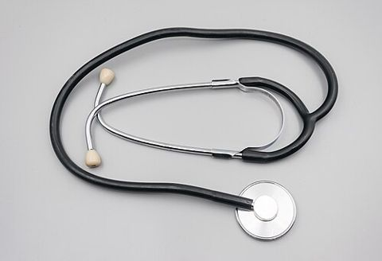 | Stéthoscope 2023 Stetoskop.jpg Auteur : Jacek Halicki — Licence : CC BY-SA 4.0 |
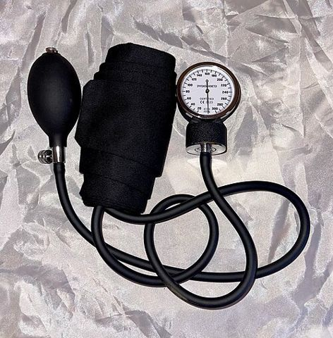 | Tensiomètre manuel Aneroid Sphygmomanometer.jpg Auteur : Confidence24 — Licence : CC BY-SA 4.0 |
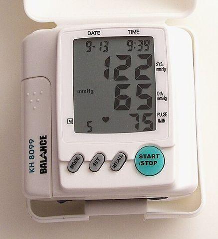 | Tensiomètre électronique Digital Blood Pressure Monitor.jpg Auteur : Solaris2006 — Licence : CC BY-SA 3.0 |
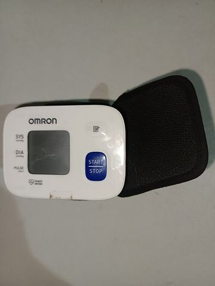 | Tensiomètre de poignet An Omron wrist blood pressure monitor.jpg Auteur : Marvelousola01 — Licence : CC0 |
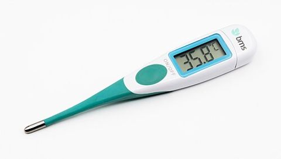 | Thermomètre digital 2023 Elektroniczny termometr lekarski.jpg Auteur : Jacek Halicki — Licence : CC BY-SA 4.0 |
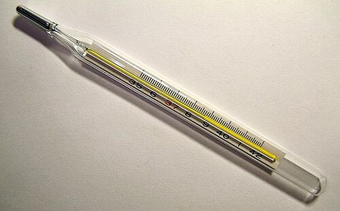 | Thermomètre à mercure Clinical thermometer 38.7.JPG Auteur : Menchi — Licence : CC BY-SA 3.0 |
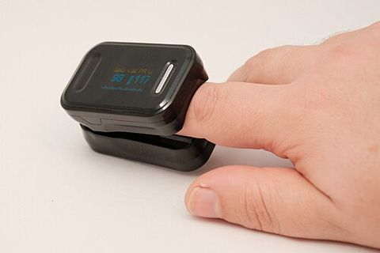 | Saturomètre Pulse oximeter on a finger.jpg Auteur : Jakub T. Jankiewicz — Licence : CC BY-SA 4.0 |
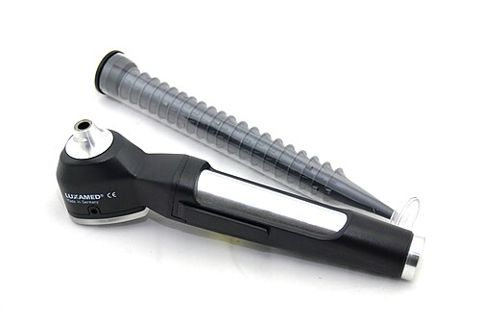 | Otoscope Ototskop mit Ohrtrichtern.jpg Auteur : GO (MedPlus Medizintechnik GmbH) — Licence : CC BY 4.0 |
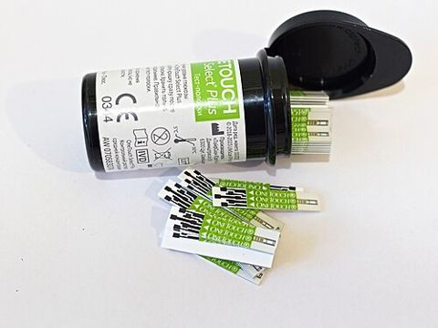 | Bandelettes de glycémie LifeScan Onetouch test strips, June 2026 01.jpg Auteur : Retired electrician — Licence : CC0 |
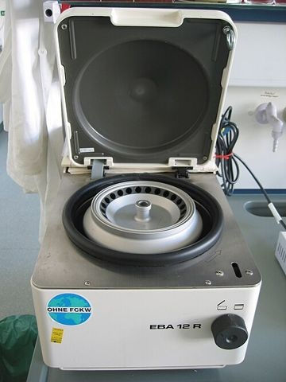 | Centrifugeuse Tabletop centrifuge.jpg Auteur : Magnus Manske — Licence : CC BY 1.0 |
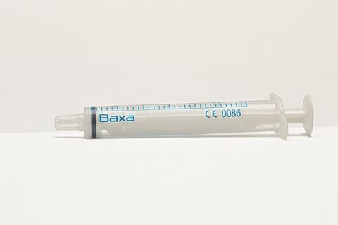 | Seringue Baxa syringe.jpg Auteur : 多多123 — Licence : CC BY 4.0 |
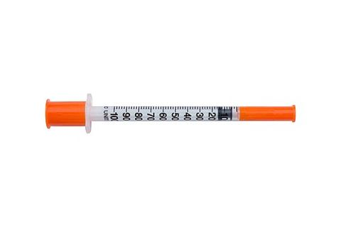 | Seringue à insuline Insulin syringe foto.jpg Auteur : http://rebcenter-moscow.ru/ — Licence : CC BY-SA 4.0 |
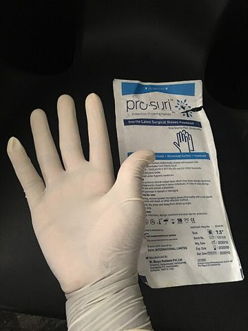 | Gants stériles Surgical Gloves.jpg Auteur : Beendy234 — Licence : CC0 |
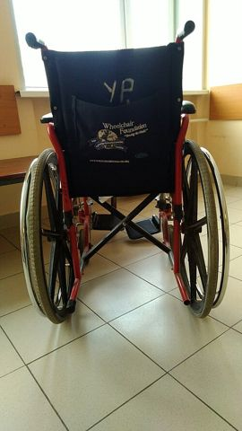 | Fauteuil roulant Wheelchair from Wheelchair Foundation in Russia,.jpg Auteur : Davronov Alexander — Licence : CC BY-SA 4.0 |
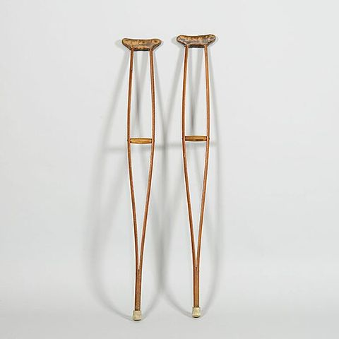 | Béquilles M0354 1951-45-061 2.jpg Auteur : MONNIN Jacques — Licence : CC BY-SA 3.0 |
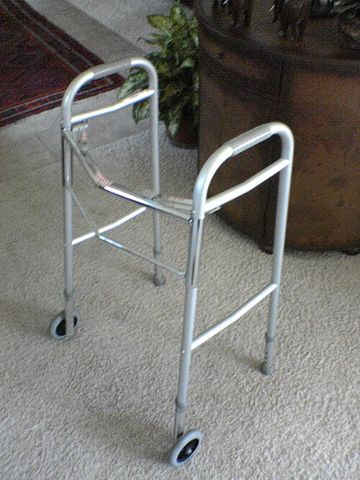 | Déambulateur Walker. frame.jpg Auteur : The original uploader was High Plains Drifter at English Wikipedia. — Licence : Public domain |
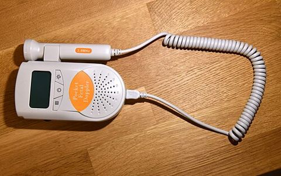 | Doppler fœtal Fetal doppler - Ultrasound - 5412.jpg Auteur : Amada44 — Licence : CC BY-SA 3.0 |
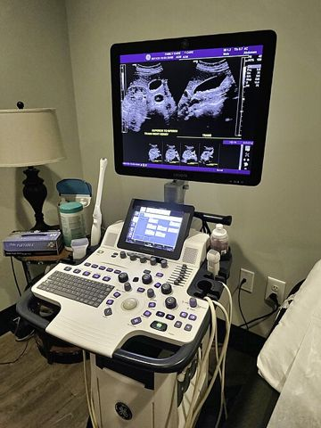 | Échographe A modern medical ultrasound scanner.jpg Auteur : Harrison Keely — Licence : CC BY 4.0 |
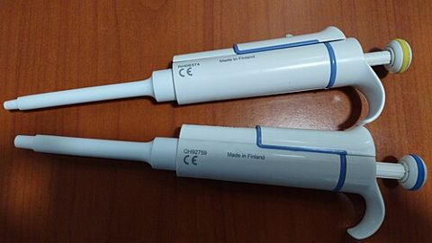 | Micropipette Micropipette 2.jpg Auteur : Microrao — Licence : CC BY-SA 4.0 |
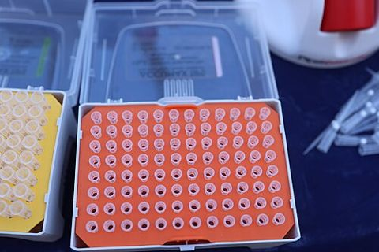 | Embouts de pipette Disposable Pipette Tips in Laboratory Tip Boxes 02.jpg Auteur : Gannu03 — Licence : CC BY-SA 4.0 |
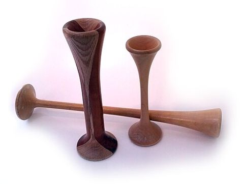 | Stéthoscope de Pinard Pinard horn.jpg Auteur : Sprinno — Licence : CC0 |
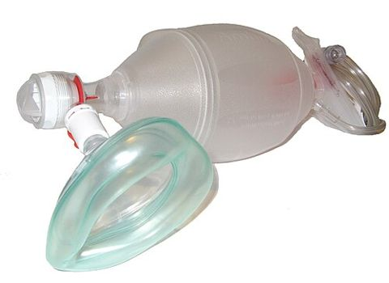 | Ballon de réanimation Ambu Bag valve mask.jpg Auteur : Mike6271 — Licence : CC BY-SA 4.0 |
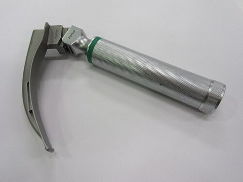 | Laryngoscope Laryngoscope (1).JPG Auteur : ICUnurses — Licence : CC BY-SA 4.0 |
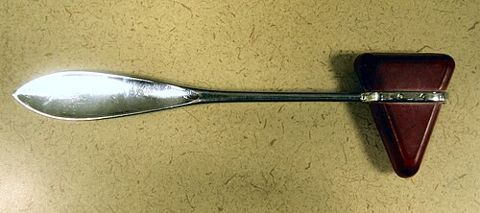 | Marteau à réflexes Reflex hammer.jpg Auteur : Samir at English Wikipedia — Licence : CC BY-SA 3.0 |
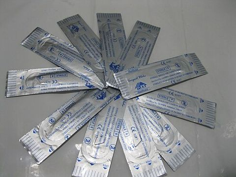 | Lames de bistouri Scalpel blade 01.JPG Auteur : Saltanat ebli — Licence : CC0 |
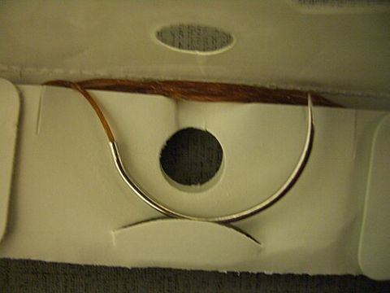 | Fil de suture CHROMIC (sterilized surgical suture).2 USP.37mm 01.JPG Auteur : Saltanat ebli — Licence : CC0 |
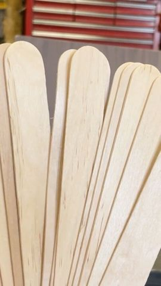 | Abaisse-langue Tongue depressor.jpg Auteur : Fatimah Bello — Licence : CC0 |
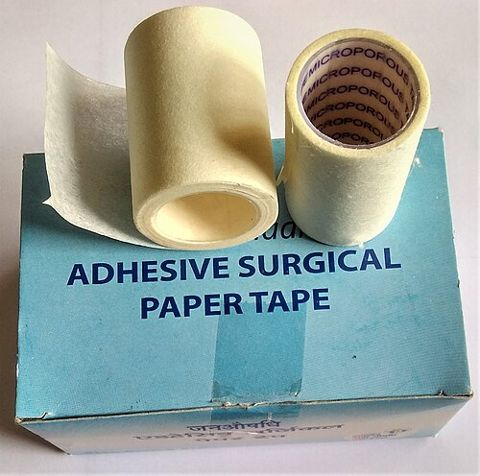 | Sparadrap Adhesive surgical paper tape.jpg Auteur : Salil Kumar Mukherjee — Licence : CC BY-SA 4.0 |
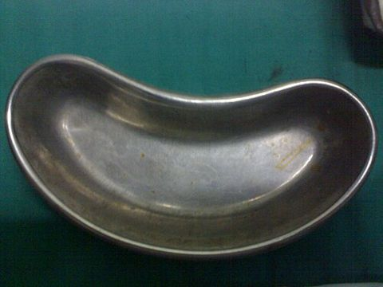 | Haricot inox Kidney Dish Instrument Medical.jpg Auteur : Sarindam7 — Licence : CC BY-SA 4.0 |
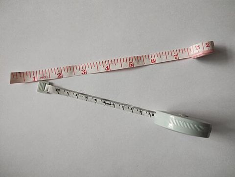 | Mètre ruban Tailor's measuring tapes.jpg Auteur : Muszkietqa — Licence : CC BY 4.0 |
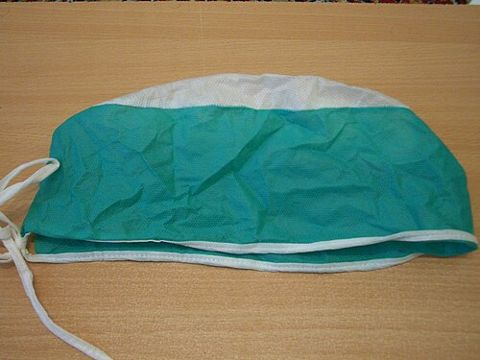 | Bonnet chirurgical Surgical Scrub Hats 01.JPG Auteur : Saltanat ebli — Licence : CC0 |
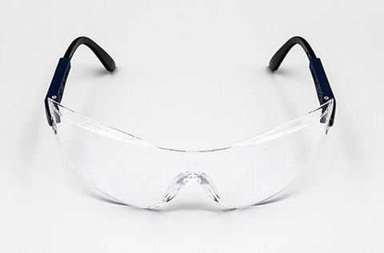 | Lunettes de protection 2023 Okulary ochronne (1).jpg Auteur : Jacek Halicki — Licence : CC BY-SA 4.0 |
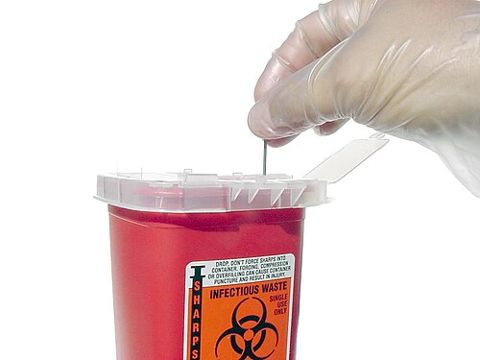 | Boîte de sécurité Sharps Container.jpg Auteur : Photographed by William Rafti of the William Rafti Institute. — Licence : CC BY 2.5 |
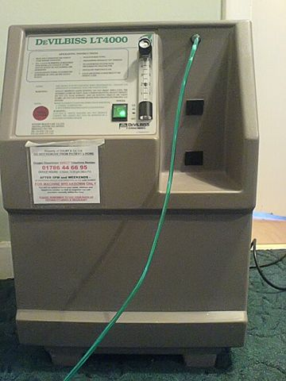 | Concentrateur d'oxygène Home oxygen concentrator.jpg Auteur : The original uploader was GiollaUidir at English Wikipedia. — Licence : CC BY-SA 2.0 uk |
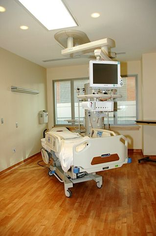 | Lit médicalisé Patient room with hospital bed.jpg Auteur : Diane A. Reid (Photographer) — Licence : Public domain |
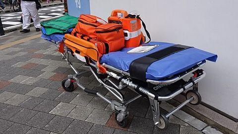 | Brancard Stretcher 20230603 120927.jpg Auteur : Ka23 13 — Licence : CC BY 4.0 |


.JPG){kind=link}


.2_USP.37mm_01.JPG){kind=link}


.jpg){kind=link}